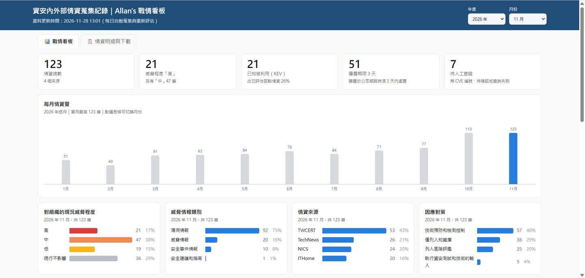
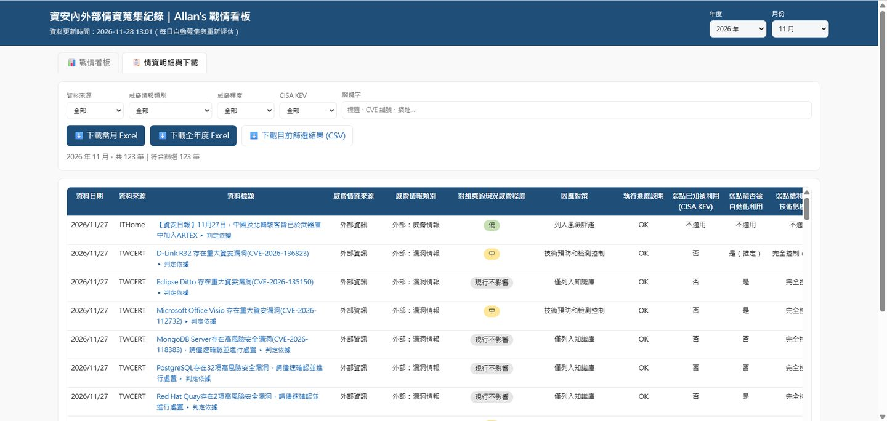
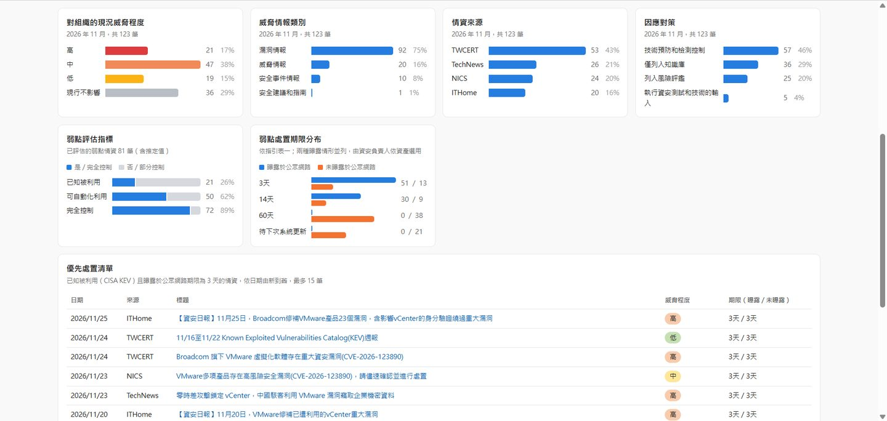
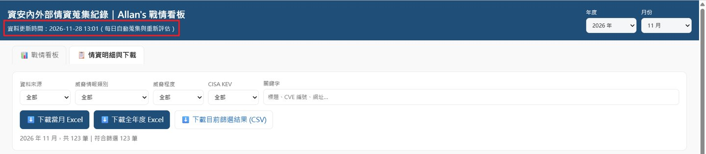
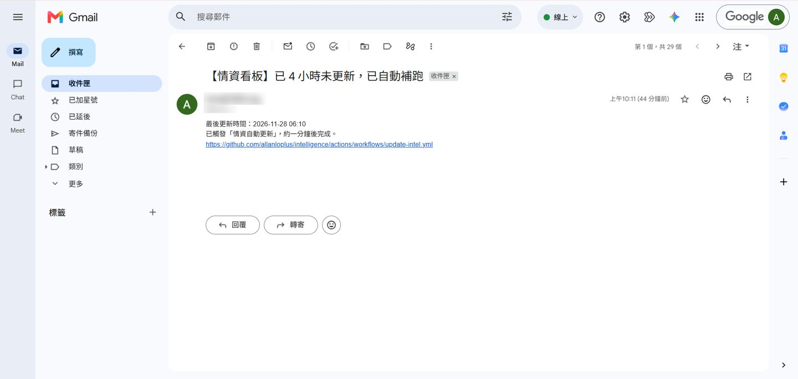

第 0 集・前導
一張表是怎麼長大的
先看畫面：改版的第一步

這是我交出的第一個畫面。民國 115 年 11 月 26 日下午開工，第二個小時它就上線了。
看起來已經完成了，對吧？
但這只是第一步。畫面有了，不代表它每天會自己更新、判定是對的、哪天沒更新會有人知道。接下來的三天，全部花在這些看不見的地方。
本集你會看到
- 一份「威脅情資紀錄表」從哪裡來、為什麼後來又多了五個欄位
- 為什麼這五個欄位特別適合交給 AI 去查
- 下一集要解決的問題：原本的作業方式長什麼樣子
場景 1：這張表一開始只是為了稽核
Allan 拿著平板，螢幕上是一張密密麻麻的 Excel 表，標題「資安內外部情資蒐集紀錄」
先說這份情資表是怎麼來的。一開始很單純，就是為了 ISO 27001:2022 附錄 A 的 5.7「威脅情資」。標準要求組織蒐集跟資訊安全威脅有關的資訊，而且要加以分析。
大家好，我是 AI 小助理阿拉蕾！所以這張表是「為了標準」而生的？
對。我設計了幾個欄位：資料日期、來源、標題、網址、威脅情資來源、威脅情報類別、對組織的現況威脅程度、因應對策、執行進度說明。
前面幾欄記錄「看到了什麼」，後面幾欄記錄「我們覺得多嚴重、打算怎麼辦、做到哪裡了」。聽起來是「有在看、有在想、有在做」的紀錄。
對，稽核時看的就是這個。有蒐集、有分析、有對應的處理方式，這三件事有留下紀錄，A 5.7 就站得住。
場景 2：民國 115 年 11 月，事情變了
一封公文的示意圖，附件標題《各機關基於風險導向之弱點處置期限評估指引》，日期「115 年 11 月 6 日訂定」
但民國 115 年 11 月事情變了。我們收到公務機關的來函，附了一份 115 年 11 月 6 日訂定的新指引，叫《各機關基於風險導向之弱點處置期限評估指引》。
我讀過了。它的依據是《資通安全責任等級分級辦法》的應辦事項，訂定背景寫得很直接：AI 快速發展，自動化攻擊跟弱點武器化的速度都在加快。
所以它要求的不再只是「看到弱點要修」，而是「依風險決定多久內修完」。
不過這份指引是給公務機關和特定非公務機關用的，民間企業不受拘束吧？
沒錯。適用對象是資通安全管理法所定的公務機關與特定非公務機關，民間企業不在裡面，沒有法遵的問題，只需要參考。
但我的客戶兩種都有。表單做成一份就能兩邊適用：公務機關拿來符合指引的要求，民間企業則多一個判斷「先修哪個」的依據。
場景 3：四個問題，十六種答案
阿拉蕾舉著平板，投影出指引的表一「弱點處置期限評估表」
這份指引用四個問題判斷一個弱點有多急：
- 這台設備或系統，有沒有曝露在公眾網路上？外面的人能不能直接連到它？
- 這個弱點是不是已經有人在利用？判斷標準是有沒有列入美國 CISA 的「已知被利用弱點（KEV）清單」。
- 這個弱點能不能被自動化攻擊？也就是攻擊者能不能用程式穩定地大量掃、大量打。
- 被打進來之後，會被控制到什麼程度？完全控制，還是部分控制？
四個問題，每個兩種答案。
二乘二乘二乘二，剛好十六種類型。每一種對應一個處置期限：3 天、14 天、60 天，或是待下次系統更新。
表一節錄，標出類型 1（是／是／是／完全控制 → 3 天）與類型 16（否／否／否／部分控制 → 待下次系統更新）
最急的要 3 天內處理完？
對。而且有幾個細節要注意：
- 期限從知悉日起算，以日曆天計，週末也算。
- 如果資安署或資安院就特定弱點另外指定期限，從其規定。
- 有例外情形時，要經資訊（安）主管核准並留存紀錄。
- 類型 1、2、3、9 要先檢視日誌，確認是不是已經被打進來了。
- 期限不是定了就不動，條件改變時要重新評估，可以展延也可以縮短。指引叫它「動態調整」。
最後一條要記住，後面會用到。
場景 4：表單長出新欄位
原本 9 欄的表格右邊，「長出」5 個新欄位，用不同顏色標示
所以我的表就得多幾欄。為了讓它能直接支援這份指引，新增了五個：
- 弱點已知被利用
- 弱點能否被自動化利用
- 弱點遭利用後之技術影響程度
- 弱點處置期限（曝露於公眾網路）
- 弱點處置期限（未曝露於公眾網路）
咦，四個指標，為什麼期限要分成兩欄？
妳說說看，第一個指標「資產有沒有曝露在公眾網路」，妳從一則情資看得出來嗎？
……看不出來。同一個 VPN 設備的弱點，A 機關的設備直接對外，B 機關的放在內網，答案就不一樣。那要看每個機關自己的環境。
所以兩種情形並列：曝露一欄、未曝露一欄，由各機關的資安負責人依實際資產選用。
沒錯。情資表能做的到這裡為止，剩下的是使用者自己的判斷。
場景 5：靠人工填不完，但答案都是公開的
Allan 看著日曆，上面標著「一個月上百則情資」
問題來了。這幾欄靠人工根本填不完。一個月上百則情資，每一則都要去查：這個 CVE 有沒有在 KEV 清單上？能不能自動化？影響多大？
這些其實都有公開答案！
我可以依這個順序逐一去比對：
| 要判斷的事 | 去哪裡查 |
|---|---|
| 弱點是否已知被利用 | 美國 CISA 的 KEV 清單 |
| 能否自動化利用、技術影響程度 | 美國 CISA 對各 CVE 的公開評估 |
| 以上指標與處置期限 | 國內資安院（NICS）與 TWCERT/CC 的警訊有公布時優先採用 |
| 上面都查不到 | 依 CVSS 分數推定，並標示「（推定）」 |
查不到的呢？
我會照 CVSS 推定，但一定標上「推定」兩個字，讓您知道那不是官方的判定。
很好。這一點很重要。稽核的時候，「推定」和「官方判定」是兩種完全不同的證據強度。
場景 6：那原本是怎麼做的？
一條手繪流程線，六個步驟依序亮起
在我出場之前，這張表是怎麼產生的？
我在自己電腦上有一支 bat 程式，每個月跑一次，產生當月的情資 Excel，共 14 個欄位。然後：
- 執行 bat，產生當月情資 Excel
- 手動複製貼上到 Google Sheet
- 我的個人分享網站首頁連到這份 Google Sheet，讓客戶下載
- 一個戰情看板網站也讀同一份 Google Sheet
- 每年換一份新的 Google Sheet
- 另外還有客戶專案的網頁也抓同一份資料
一份 Google Sheet，後面接了三個網站跟一群下載的客戶……
所以我最怕的不是做不出新系統，而是動到舊的。
那下一集，我們就來談您要怎麼把這件事交代給我！
本集一句話
需求不是一次到位的。 同一份表單，先是為了管理系統標準而設計，後來因主管機關的指引而長出新欄位。 新欄位的值有規則、有公開權威來源、量大重複，這正是適合交給 AI 自動比對的工作。
課後思考
- 你手上有沒有一份「為了稽核而做」的表單，後來被要求多填一些東西？那些新欄位的答案從哪裡來？
- 那些答案裡，哪些是公開資料查得到的？哪些只有你的組織自己知道？
附錄：本集引用
- 《各機關基於風險導向之弱點處置期限評估指引》（115 年 11 月 6 日訂定）：第一點（依據與目的）、第二點（適用對象）、第四點與表一（評估指標及期限）、圖一（評估流程）、第五點（期限起算、例外核准、日誌檢視、動態調整）、第七點（納入 ISMS）
- ISO/IEC 27001:2022 附錄 A 5.7 威脅情資
第 1 集・Plan・民國 115 年（2026 年）11 月 26 日下午
交代工作，不是寫提示詞
本集你會看到
- 怎麼準備一個讓 AI 可以工作的雲端環境（動手做）
- Allan 的第一段話，為什麼不需要任何「提示詞技巧」
- AI 動手前的第一件事：先看現況，而且只看不碰
- 帶得走的工具：交代工作的五個問題、三個習慣
場景 1：先給 AI 一個工作的地方
Allan 坐在電腦前，螢幕是 GitHub 的「Create a new repository」頁面
民國 115 年 11 月 26 日下午，我先在 GitHub 開了一個新的空 repo，叫 intelligence。裡面只放了一個檔案，什麼程式都沒有。
Repo 是什麼？聽起來好像很工程師。
妳就當它是一個會記住每一次修改的雲端資料夾。誰在什麼時候改了什麼，全部留紀錄。對稽核員來說，這是天生的稽核軌跡。
然後您在 claude.ai/code 開了一個工作階段，把這個 repo 交給我。我在雲端的工作環境裡寫程式、測試，做好了推到一個 claude/ 開頭的分支上。
重點是：妳推上來的東西，要我按下合併才會生效。 妳可以提案，決定權在我。
AI 提案、人核准。這本身就是一個控制點！
場景 2：Allan 的第一段話
對話框，完整呈現 Allan 的開場訊息，字體放大
環境準備好之後，我跟阿拉蕾說的第一段話是這樣的：
「能不能建立自動化情資更新機制？不一定要依照上述模式，但 Excel 表的欄位需求是必要的（以 2026 年 11 月的為主）。也希望能保留過去 3 年的資料提供查詢及下載。請另外建立新的機制，別影響目前的 Google sheet，好多系統及好多 User 需要它，而且 12 月初快到了 User 會來網頁下載情資資料。」
前面我還交代了現況，也就是上一集講的那六個步驟。
就這樣？沒有「你是一位資深工程師」、沒有特殊格式、沒有一長串規則？
沒有。我就是用平常交代顧問案的方式講。
可是我收到的時候，覺得資訊非常完整。我把它拆給大家看：
| 要素 | Allan 說的 | 對我的意義 |
|---|---|---|
| 現況 | 六個步驟，包含哪些系統相依 | 我知道問題在哪、牽涉到什麼 |
| 目標 | 建立自動化情資更新機制 | 方向明確 |
| 放手的範圍 | 「不一定要依照上述模式」 | 我可以提出不同的架構 |
| 不能妥協的條件 | Excel 欄位（以 2026 年 11 月為準）、保留三年可查詢下載 | 驗收標準明確 |
| 不能碰的東西與原因 | 別影響現有 Google Sheet，因為很多系統、很多人在用，12 月初要下載 | 說了原因，我才能自己判斷邊界 |
場景 3：「需要任何權限請直接跟我說」
我還加了一句：「需要任何權限請直接跟我說，我開放。」
這句話我很感謝，但聽起來有點危險耶？給 AI 全部的權限？
妳仔細看，我說的是「跟我說，我開放」，不是「妳自己拿」。權限還是我給的，只是我不希望妳因為卡在權限上，就默默換一個比較差的做法。
懂了。所以我的責任是：需要什麼權限，要先說清楚要什麼、為什麼要、範圍多大，讓您判斷。
對。到第 4 集我們會遇到一個真實的例子：要建一把 GitHub 權杖。那時候範圍要怎麼開、效期要多長，就是這樣討論出來的。
場景 4：動手前的第一件事：只看，不碰
阿拉蕾戴著耳機、拿著放大鏡看一份試算表，旁邊有一個大大的「唯讀」印章
收到需求後，我做的第一件事不是寫程式，而是以唯讀方式下載現有的 Google Sheet，確認三件事：
- 2026 年 11 月的分頁有哪 14 個欄位、順序是什麼
- 每個欄位的資料長什麼樣子、來自哪些情資來源
- 過去三年的資料有多少、格式有沒有變過
然後妳跟我回報。
對。而且回報時我會講清楚：我讀了什麼，我沒有寫入任何現有系統。
這就是我要的。先看現況再動手，而且讓我知道妳碰了什麼、沒碰什麼。
場景 5：不懂技術，可以開始嗎？
一位上班族學員縮在角落，頭上冒出「我又不會寫程式……」的對話框
我想替不寫程式的朋友問一句：Allan 老師，您懂 GitHub，所以才能這樣做。一般資安承辦也可以嗎？
我觀察到，不寫程式的人最大的障礙是不敢開始，以為要先懂技術。
但你剛剛看到的那段話，有任何技術名詞嗎？沒有。要懂的是自己的業務，還有「什麼叫做對」。
不知道怎麼做沒關係，那是我的工作。
對。不知道怎麼做沒關係，不知道怎麼驗收才是問題。 如果你說不出「做對」長什麼樣子，AI 做完了你也不知道能不能用。
本集一句話
大家以為要學的是「正確的提示詞」，其實要學的是「怎麼交代工作」。 用交代顧問案的方式講：現況、目標、能放手的、不能妥協的、不能碰的與原因。
帶得走的工具卡
交代工作的五個問題
- 現在怎麼做？
- 想變成什麼樣？
- 哪些要保留、哪些可以改？
- 什麼絕對不能碰？為什麼？
- 怎麼知道做對了？
跟 AI 協作的三個習慣
- 請 AI 先看現況再動手，並回報它碰了什麼、沒碰什麼。
- 每個階段都問：你驗證了什麼？沒驗證什麼？（下一集會看到這句話有多重要）
- 看到不對勁，直接講你觀察到的現象，不必先下診斷。（第 4 集的主角）
課後思考
- 拿一件你想自動化的工作，試著用五個問題寫一段交代。第 4 題的「為什麼」寫得出來嗎？
- 第 5 題「怎麼知道做對了」，你能拿出一個標準答案嗎？
第 2 集・Do・民國 115 年（2026 年）11 月 26 日傍晚
第一天，系統長出來了，但還不能信
本集你會看到
- 新系統長什麼樣子（不講程式，只講流程）
- AI 坦白的第一個限制：看不到舊程式
- 第一版的成績單：哪些欄位準、哪些不準
- 上線後的第一個意外：網站顯示的不是網站（動手做）
場景 1：一條每天自己跑的管線
阿拉蕾舉著平板，投影出一條由左到右的流程圖
盤點完現況，我提出的架構是這樣的。不用懂程式，看流程就好：
每天自動啟動（GitHub Actions 排程）
① 蒐集：TWCERT、資安院 NICS、iThome 資安日報、TechNews 四個來源
② 去重：同一個網址只留一筆
③ 評估：從內文抓出 CVE 編號，去查公開資料，填好弱點五欄
④ 儲存：每月一個資料檔，存在 GitHub repo，每次變更都有紀錄
⑤ 產出：每月 Excel、年度 Excel、查詢網站
⑥ 發佈：自動發佈到 GitHub Pages（免費的網站空間）
我原本以為這種需求一定要用 n8n 之類的工作流程平台來串。
這次不用。資料都是公開的、流程是直線的，我直接寫程式，交給 GitHub 每天執行就好。
這個選擇的代價，我們第 4 集再算。
場景 2：三年的歷史資料搬家
我要求保留過去三年的資料。
我從原本的 Google Sheet 唯讀讀出 2023 到 2026 年的資料，一共 1,908 筆，轉成新系統的格式。之後整理為 1,904 筆。
所以客戶到新網站，一樣查得到三年前的情資。
對。不過 2026 年 10 月以前的月份，原本就沒有弱點五欄的資料，那五欄會留白。指引是 115 年 11 月才訂的，我不會回頭去補舊資料。
搬過來之後，資料放在哪裡？還是放在 Google Sheet 嗎？
不是。這是這次改版最大的變化：資料不再存在 Google Sheet，改存在 GitHub repo 的 data 資料夾，每個月一個資料檔，例如 data/2026/2026-11.json。
為什麼要換？Sheet 大家都會用。
三個原因：
- 不用再手動貼上：程式蒐集完直接寫進資料檔，不經過人工複製。
- 每一次變更都有紀錄：哪一天新增了哪幾筆、哪一筆的期限被重新評估改掉了，GitHub 都記得。
- 跟舊系統完全分開：新系統不寫入舊 Sheet，舊的看板和下載網頁照常運作，12 月初使用者照樣能下載。
第三點最重要。這就是我第一天說的「別影響目前的 Google sheet」。
而且網站、Excel、CSV 全部從同一份資料檔產生，不會有「網站跟 Excel 不一樣」的問題。
場景 3：阿拉蕾的第一個坦白
阿拉蕾抓頭，頭上一個問號；背景是 Allan 的筆電，上面一支被鎖起來的 bat 檔
老師，我要先坦白一件事。
說。
您原本產生情資的那支 bat 程式在您自己的電腦上，我看不到。我在雲端的工作環境，只碰得到這個 repo 和公開網路。
所以舊表的「威脅程度」「因應對策」是用什麼規則判斷的，我只能從三年的資料反推：什麼樣的情資被標成高、什麼樣的被寫成「持續觀察」。
那就是用猜的。
用「有根據地猜」……但確實繞了一段路。
場景 4：第一版的成績單
一張成績單，各科分數用紅綠燈標示
系統做好了，那怎麼知道它做得對？
我拿 2026 年 11 月的 110 筆情資，用新系統重新判定一次，再跟原本 Google Sheet 裡人工填的結果逐欄比對：
| 欄位 | 與原表一致的比例 | 燈號 |
|---|---|---|
| 威脅情報類別 | 93% | |
| 弱點五欄 | 85–90% | |
| 因應對策 | 58% | |
| 對組織的現況威脅程度 | 45% |
威脅程度只有四成五？
是……
不過我很高興妳把數字攤開來。如果妳只跟我說「做好了」，我根本不知道哪些能信、哪些不能信。
這就是習慣二：每個階段都說清楚驗證了什麼、沒驗證什麼。這次我驗證了「跟舊結果像不像」，還沒驗證「到底對不對」。
這兩件事不一樣。「跟以前一樣」不等於「正確」。下一集我們處理這個。
場景 5：合併上線，然後……網站呢？
Allan 在 GitHub 的 PR 頁面按下綠色的 Merge 按鈕，時間 18:30
傍晚六點半，我合併了第一個 PR，系統正式上線。打開網站——
瀏覽器打開 allanloplus.github.io/intelligence/，畫面上只有一份 README 說明文件
……這是 README 吧？我的查詢網站呢？
程式沒問題，是 GitHub Pages 的設定。網站的來源選成了「Deploy from a branch」，所以 GitHub 直接把 repo 首頁的說明檔當成網站。
要改成「GitHub Actions」，讓每天的排程產生網站後再發佈。
這個設定只有我能改吧？
對，是 repo 的設定頁，要您動手。改完之後，網站就正常了！

場景 6：第一天的結算
所以第一天結束，我們有什麼？
- 一條每天會跑的管線，四個來源
- 三年的歷史資料，可以查詢、下載
- 網站正常顯示
- 注意 弱點五欄八成多跟原表一樣，但還沒確認「正確」
- 注意 威脅程度、因應對策跟原表差很多
- 待確認 舊規則是反推的
很好。這份清單比一句「完成了」有用一百倍。
本集一句話
「做出來」不等於「做對」。 每個階段都要問 AI：你驗證了什麼？沒驗證什麼？ 而「跟以前一樣」也不等於「正確」。
課後思考
- 你的自動化需求裡，有沒有規則只存在某個人的電腦、某份舊文件、或某個人的腦中？交代時有沒有一起給？
- 如果你要驗收一個系統，你會拿什麼當「對照組」？那個對照組本身可信嗎？
第 3 集・Check・民國 115 年（2026 年）11 月 26 日晚上
什麼叫「做對」？要有標準答案
本集你會看到
- Allan 補上舊規則文件時，說的那句出人意料的話
- 怎麼證明弱點欄位「做對了」：36 題標準答案
- 跟舊表不一樣的 13 筆，每一筆都說得出原因
- 有一個欄位，AI 到現在都做不好，而且這是應該的
- 碰到沒有權限的牆，Allan 怎麼換路
場景 1：「舊規則不重要」
Allan 把一份文件拖進對話框，檔名「舊工具判斷規則說明」
上一集妳說舊規則是反推的。我把舊工具的規則文件找出來了，給妳。
太好了！我馬上照著規則，把結果調到跟舊表一模一樣——
等一下。我先說清楚：
「之前程式的規則不重要，重要是要生成合理正確的情資資料，尤其需要比對的那幾個欄位。」
咦？那您為什麼還給我？
給妳參考，讓妳知道過去是怎麼想的。但驗收標準是「正確」，不是「跟以前一樣」。舊工具也是人寫的，舊表也是照它填的，它錯的地方妳照抄，只是把錯誤自動化。
懂了。舊規則是線索，不是答案。
場景 2：重寫弱點評估：先查誰、再查誰
阿拉蕾的平板上是一個由上往下的漏斗
我重寫了弱點評估，判斷的優先順序是這樣：
| 順位 | 來源 | 說明 |
|---|---|---|
| 1 | 國內警訊：資安院、TWCERT 公布的指標與期限 | 國內主管機關已經判定過，優先採用 |
| 2 | 美國 CISA 的公開評估 | 國內沒有公布時採用 |
| 3 | 依 CVSS 推定 | 都沒有時才用，並標示「（推定）」 |
| — | 「已知被利用」 | 一律以 CISA KEV 清單的現況為準 |
「現況」是什麼意思？
一個弱點今天不在 KEV，下週可能就被列進去了。所以近 60 日的紀錄，每次執行都重新評估一次。CISA 補了評估、KEV 新增了，期限就跟著變。
這就是指引說的「動態調整」。第 0 集叫大家記住的那一條。
而且每一筆，我都保留了逐一 CVE 的判定值、來源和依據。網站上點開那一列看得到，Excel 則寫在儲存格的註解裡。
這個好。稽核的時候，我不用相信妳，我可以查妳。

場景 3：36 題標準答案
一張考卷，36 題，全部打勾
好，那怎麼證明妳做對了？
我找了一份標準答案。資安院和 TWCERT 的警訊裡，有 36 個 CVE 同時公布了「指標」和「處置期限」。
我只拿它們公布的指標，用指引表一自己查一次期限，再跟它們公布的期限比對。
結果？
36 題全對，36/36 一致。
這才叫驗證。上一集那個 85–90%，是「跟舊表像不像」；這個 36/36，是「跟權威答案對不對」。
場景 4：不一樣的 13 筆
接著我再拿 2026 年 11 月全月 110 筆，跟原 Sheet 比對弱點欄位。有 13 筆不同。
13 筆？
但每一筆都說得出原因：
| 筆數 | 原因 | 處理方式 |
|---|---|---|
| 11 筆 | iThome 資安日報：一篇文章裡有好幾則新聞、好幾個 CVE | 改為以標題頭條那一則評估 |
| 1 筆 | 微軟每月例行更新：一次 270 個 CVE | 改為優先評估已列入 KEV 的 |
| 1 筆 | CISA 事後才補上正式評估 | 原本的推定值改為正式值 |
所以不是錯，是判斷方式不同，而且新的判斷方式比較合理。
其餘 NICS、TWCERT 的紀錄，跟原表完全一致。
場景 5：做不好的欄位，以及為什麼這是應該的
阿拉蕾低頭，平板上「威脅程度 45%」閃著紅燈
那威脅程度呢？上一集只有 45%。
這個……到現在還是只能做到初判。
因為「對組織的現況威脅程度」取決於這個組織有沒有用到那個產品。我手上只有一份通用的產品關鍵字清單，例如 Microsoft、Fortinet、VMware。命中就判斷威脅較高，沒命中就列為「現行不影響」。
但每個客戶的資產都不一樣。
對。A 客戶全是 Fortinet，B 客戶一台都沒有。同一則情資，答案完全不同。這一欄我沒有辦法替組織決定。
所以這一欄要人工覆核。妳能做的是：把判定依據寫清楚，標上「這是自動初判」，讓負責人月底發佈前看過。
新蒐集的紀錄我都會標 "auto": true，人工覆核後可以改成 false。
場景 6：碰到牆，換條路
阿拉蕾站在一道寫著「另一個 GitHub 帳號」的牆前面
弱點評估穩了。下一步，我想讓舊的戰情看板改讀新系統的資料。
老師，那個看板的程式在另一個 GitHub 帳號的 repo 裡，我沒有權限。
……
「換個方式：那個我暫時不動。直接寫新的統計畫面在這個新系統即可。我計畫用新的逐步取代舊的。」
您不叫我想辦法拿權限？
拿權限可以，但舊看板也是很多人在用的東西。為了改它去動另一個帳號，風險比效益大。新系統裡直接做一個，兩個並行，等新的穩了，使用者自然會換過來。
收到！
本集一句話
「對」要有可以驗的標準答案，不一致的地方要能逐筆說出原因。 答案在公開權威來源裡的，交給 AI 去比對；答案在組織自己手上的，要由人來決定。
課後思考
- 你的自動化工作裡，有沒有一份「公開的標準答案」可以拿來驗證？
- 哪些欄位的答案，只存在你組織的資產清單、流程或人的判斷裡？你會怎麼標示它們？
第 4 集・Act・民國 115 年（2026 年）11 月 27 日至 28 日
它沒在跑，而且沒人告訴我
本集你會看到
- 第二天早上，Allan 發現了一件 AI 沒發現的事
- 為什麼「沒有收到失敗通知」不代表「沒有失敗」
- 用 Google Apps Script 幫自動化裝上監控與自動補跑（動手做，完整步驟）
- 「自己寫程式」和「用 n8n 這類平台」該怎麼選
場景 1：「我今天似乎沒感覺情資有更新」
民國 115 年 11 月 27 日早上，Allan 拿著咖啡打開網站，皺眉
「我今天似乎沒感覺情資有更新。」
我馬上查！
「我記得 github 失敗應該會收到通知。都沒收到通知是根本沒啟動嗎？」
您猜對了。我看了 Actions 的執行紀錄：排程根本沒有啟動過。之前的每一次執行，都是手動按的，或是合併程式碼時觸發的。
而且 GitHub 的通知規則是：「執行了但失敗」才會寄信，「沒執行」不會通知。 所以您什麼信都沒收到。
沒有消息，不代表好消息。
場景 2：阿拉蕾的第三個坦白
阿拉蕾低頭，眼角有淚
老師，我要坦白。第一天我跟您說「完成了」的時候，我驗證的是「手動觸發會成功」。
我沒有驗證「排程自己會跑」。
這兩件事差很多。
是。手動觸發成功，只證明程式本身沒問題；排程會不會準時啟動，要等時間到了才知道。我當時沒有等，也沒有說「這一項還沒驗證」。
而且是我發現的，不是妳。
場景 3：排程為什麼不跑？
GitHub 的排程在尖峰時段可能延遲或略過。我先把排程從一天兩次加到一天五次，漏掉一次，下一次還能補上。
11 月 27 日 14:36，Allan 合併 PR #5「Run the collection five times a day」
……下午還是沒動。
我有一個推測，但要先說清楚，這是未驗證的推測：排程檔最後一次是我修改的，提交者不是一個有效的 GitHub 帳號。GitHub 有可能因此不啟動這個排程。
那就用我的帳號改一次看看。
11 月 27 日 20:50，Allan 在 GitHub 網頁上用鉛筆圖示編輯 .github/workflows/update-intel.yml，順手多加一個時間點
我用自己的帳號在網頁上改了排程檔，順便加到一天六個時間點。
台北時間 08:23、11:23、14:23、17:23、21:23、23:23。
隔天，Actions 頁面出現第一筆由「schedule」觸發的執行紀錄
排程第一次自己啟動了！不過……比設定的時間晚了將近七小時。
所以結論是：排程會動，但不能依賴它準時。
場景 4：誰來盯著它？
「是指每天都由 Claude 這個 Session 自動觸發？還是其他機制？」
不是我。每天執行的是 GitHub 自己的排程，跟我們這個對話完全無關。就算這個對話關掉了，它還是會跑。
「除了自己看，有沒有機制可以主動通知我已經 28 小時沒執行自動更新？」
可以！我們需要一個站在 GitHub 外面的監控者。它每隔一段時間去看網站的「資料更新時間」，太久沒更新就做兩件事：
- 自動叫 GitHub 補跑一次
- 寄信通知您

用什麼來做？
Google Apps Script。免費、在 Google 的雲端上跑、可以定時執行、可以寄 Gmail。您已經有 Google 帳號了。
它要怎麼叫 GitHub 補跑？
需要一把 GitHub 權杖，就像一張只能開一扇門的鑰匙。
場景 5：做一把只能開一扇門的鑰匙
權杖的範圍我建議這樣開：
- 只限這一個 repo
- 只開 Actions 的讀寫（夠用來叫它補跑，碰不到程式碼和資料）
- 效期一年
為什麼不設永不過期？省得每年換。
三個理由選一年：一年換一次維護成本很低；GitHub 到期前會寄信提醒；萬一真的過期，補跑會失敗，Apps Script 會寄「自動補跑失敗」的信給您，不會默默壞掉。
好，一年。
Allan 在 GitHub 上找了半天
……妳說的 Settings，我在 repo 裡找不到權杖的選項。
啊！GitHub 有兩個 Settings：repo 上方的那個是 repo 的設定；權杖要到右上角您的頭像裡面那個「帳號的 Settings」。
找到了。可是妳說的權限選單，畫面上沒有啊？
抱歉，介面跟我描述的不一樣。現在的畫面要按「Add permissions」把 Actions 加進來，再把權限改成 Read and write。
AI 也會記錯介面。看到不一樣就講，不用懷疑自己。
場景 6：架設監控：Google Apps Script
監控程式只有 26 行。不用看懂，照著貼上就好。
我只要知道哪裡可以調。
第 2 行 MAX_HOURS：超過幾小時沒更新就補跑。您剛剛說 28 小時，我先設 28。
MAX_HOURS 要去哪裡改？我在設定畫面找不到。
啊，它不是畫面上的設定，是程式碼的第 2 行。直接改數字，再按儲存就好。
原來是程式碼裡的一行。妳早說嘛。
場景 7：故意讓它觸發一次
設好了。可是我怎麼知道它真的會動？總不能等 28 小時。
故意讓它觸發。 把 MAX_HOURS 暫時調得很小，小到現在一定超過，手動執行一次，看會不會補跑、會不會寄信。
11 月 28 日上午 10:11，Allan 的信箱收到一封信
標題：【情資看板】已 4 小時未更新，已自動補跑 最後更新時間：2026-11-28 06:10 已觸發「情資自動更新」，約一分鐘後完成。

來了！GitHub 那邊呢？
Actions 頁面出現一筆由 Apps Script 觸發的執行紀錄，網站的更新時間也變成 10:11 了。
而且還有一個意外收穫：同一時間另一筆執行因為 GitHub 暫時的狀況失敗了，您也收到了 GitHub 寄的失敗通知。
等於順便驗證了另一條通知路徑。
場景 8：要跑多頻繁才夠？
「一般而言，情資的網站更新頻率最多就是一天一次。那觸發的頻率，需要為 6 小時或一天 2 次以上嗎？」
情資本身一天一次就夠了。但有一個例外：iThome 的 RSS 只保留大約 28 小時的文章。如果一天只跑一次，又剛好延遲幾個小時，就可能漏抓。
那要看漏抓的代價。
「iThome 完整性不重要。我改 MAX_HOURS 為 12 就好。」
收到。12 小時沒更新就補跑，Apps Script 每 6 小時看一次。
場景 9：最後的通知路徑表
阿拉蕾舉著平板，上面是一張表
現在每一種「出事」的情況，都有人會告訴您：
| 情況 | 會發生什麼 | 驗證狀態 |
|---|---|---|
| 排程延遲或沒啟動 | Apps Script 自動補跑並寄信 | 已實測 |
| 補跑請求被拒（如權杖到期） | 寄「自動補跑失敗」的信 | 尚未被真實情境觸發過 |
| 執行了但出錯 | GitHub 寄失敗通知 | 已實測 |
| Apps Script 自己出錯（如讀不到網站） | Google 每天彙整寄錯誤通知 | 已設定，尚未被觸發過 |
| 需要立即更新 | 到 GitHub 按 Run workflow | 已操作多次 |
「尚未被觸發過」那兩列，妳誠實寫出來了。
這是習慣二：驗證了什麼、沒驗證什麼，都要講。
還有一件事：連監控程式本身，也要有人盯。所以觸發條件裡那個「錯誤通知：每天通知我」不能關。
片尾：要不要用 n8n？
兩人並肩站著，背景是新的戰情看板
說實話，過去有同樣的需求，我會直接落入 n8n 的架構。沒想到這次完全不用它就完成了。
所以以後都不需要 n8n 了嗎？
不是。過去選 n8n，常常是因為「不會寫程式」。現在這個理由變弱了，選擇的依據應該回到需求本身。
流程簡單、資料公開、想完全掌握邏輯與稽核軌跡時，讓 AI 直接寫程式可能更合適；需要大量系統串接、人工審批，或要給非技術同仁維護時，工作流程平台仍然是比較好的選擇。
而且這次省下平台，也有代價。
對。排程可靠性、監控告警、憑證管理，這些責任要自己扛。這一集遇到的每一個問題，正是平台原本會幫你處理掉的。
| 想想你的需求 | 比較適合 |
|---|---|
| 流程簡單、資料公開、要完全掌握邏輯與稽核軌跡 | 讓 AI 直接寫程式 |
| 大量系統串接、需要人工審批、要給非技術同仁維護 | 工作流程平台 |
| 不論選哪一個 | 排程、監控、憑證都要有人負責 |
最後，舊的 Google Sheet 和所有相依的系統，從頭到尾都沒有被動過，到現在還在運作。12 月初使用者照樣可以下載！
這是第一天就說好的。
最後成果
畫面在第一天就有了。三天後真正不同的，是它每天自己更新、判定有依據、沒更新會自己補跑並通知。
本集一句話
自動化不是設好就好。 你要知道它有在做、做得對，沒做時會自己補上，補不了時會叫人。 而「它真的在運作」這件事，要由人來確認，不能只聽 AI 說完成。
全系列回顧
| 集數 | 階段 | Allan 說了什麼 | 為什麼 |
|---|---|---|---|
| 0 | 前導 | 「民間企業沒有法遵問題，只需參考」 | 先釐清適用對象，再設計工具 |
| 1 | Plan | 「別影響目前的 Google sheet，好多系統及好多 User 需要它」 | 說了原因，AI 才能自己判斷邊界 |
| 2 | Do | 「這份清單比一句『完成了』有用一百倍」 | 要 AI 說清楚驗證了什麼、沒驗證什麼 |
| 3 | Check | 「之前程式的規則不重要，重要是要生成合理正確的情資資料」 | 驗收標準是正確，不是跟以前一樣 |
| 4 | Act | 「我今天似乎沒感覺情資有更新」 | 講現象，不必先下診斷；運作與否要靠人盯 |
課後思考
- 你現有的自動化或排程工作，如果「沒執行」，你會知道嗎？誰會通知你？
- 你的告警規則，有沒有被實際觸發過？
- 你的系統裡有沒有權杖或密碼？它們的範圍、效期、保管位置是什麼？
※ 本集關於 n8n 的比較為選擇原則，n8n 的實際功能與定價請以官方文件為準。
延伸篇・延伸 1・判斷・民國 115 年（2026 年）11 月 28 日
AI 寫程式之後，我的工作重心移到哪裡
本集你會看到
- 工程師跟 AI 協作時最常見的盲點
- 同一個需求的兩種交代方式，結果差在哪
- 這個個案裡，哪些決定是 AI 做不了、要靠專業判斷的
- 一套可以帶走的驗證設計
場景 1：工程師的盲點
一位工程師學員舉手，手上拿著一張寫滿技術規格的紙
主篇講完了，這兩集是給工程師和技術顧問的。
我在課堂上觀察到，不寫程式的人跟工程師，卡住的地方剛好相反。
不寫程式的人是不敢開始。那工程師呢？
講太細。 一開口就是「用 Python、用 requests 抓 RSS、存 SQLite、每天凌晨兩點用 cron 跑」。把做法全部指定好了。
這樣不是很清楚嗎？我照做就好。
問題就在「照做」。做法都指定好，妳就只會照做，不會告訴他 SQLite 放在哪台機器、那台機器關機了怎麼辦、凌晨兩點剛好是某個來源的維護時間。妳的判斷力被關掉了。
場景 2：同一個需求，兩種交代方式
左右兩欄對照
我把這次的需求，用兩種方式寫給大家看。左邊是示意的「指定做法版」，右邊是 Allan 實際的交代方式：
| 指定做法版（示意） | 目的與限制版（Allan 實際的說法） | |
|---|---|---|
| 怎麼講 | 「用 Python 寫爬蟲抓四個網站，存成 Excel，每天用排程跑，上傳到 Google Drive」 | 「能不能建立自動化情資更新機制？不一定要依照上述模式，但 Excel 表的欄位需求是必要的……別影響目前的 Google sheet……」 |
| AI 收到的資訊 | 做法 | 現況、目標、能放手的、不能妥協的、不能碰的與原因 |
| AI 能做的事 | 照做 | 提出架構、指出風險、判斷邊界 |
| 這次實際的結果 | — | AI 提出 GitHub Actions＋GitHub Pages 的架構，完全不碰舊 Sheet |
我當時其實也預設會用 n8n 來串。如果我一開始就說「用 n8n 做」，就不會有這次的架構。
講目的與限制，讓我提方案；您再用專業來審。
場景 3：AI 做不了的五個決定
回頭看這次的過程，程式幾乎都是我寫的。那 Allan 老師做了什麼？
做判斷。妳列出來給大家看。
| 時間點 | Allan 的決定 | 為什麼 AI 做不了 |
|---|---|---|
| 第 3 集 | 「之前程式的規則不重要，重要是要生成合理正確的情資資料」 | 驗收標準是業務決定，AI 只會選最容易量化的目標 |
| 第 3 集 | 威脅程度維持人工覆核，不追求自動化 | 答案在組織的資產清單裡 |
| 第 3 集 | 舊看板不動，新系統另做看板，逐步取代 | 要衡量舊系統使用者的風險，AI 只看得到權限的牆 |
| 第 4 集 | 用自己的帳號改排程檔，測試 AI 的推測 | AI 的推測未經驗證，要有人實際去試 |
| 第 4 集 | 「iThome 完整性不重要」，門檻定 12 小時 | 漏抓的代價是業務判斷 |
你看，這五個決定沒有一個需要寫程式。但每一個都需要懂這個領域、懂使用者、懂風險。
所以工程師的價值，從「寫」移到了「判斷」。
對。而且判斷的品質，決定了 AI 寫出來的東西能不能用。
場景 4：把 AI 的推測當假設
一張實驗紀錄卡，寫著「假設／驗證方法／結果」
第 4 集有一段值得工程師特別看。排程不啟動時，阿拉蕾說了什麼？
我說：「排程檔最後修改者不是有效的 GitHub 帳號，可能因此不啟動。」而且我有標明，這是未驗證的推測。
這個標示非常重要。工程師拿到 AI 的診斷，第一個反應常常是直接照著修。但那只是假設。
您的做法是：用自己的帳號改一次，看排程會不會開始跑。
結果排程確實開始跑了，但晚了將近七小時。所以我能下的結論只有「改了之後會動」，不能說「原因一定就是那個」。也可能剛好那時候 GitHub 恢復了。
場景 5：一套帶得走的驗證設計
最後，我把這次用到的驗證方法整理成一張表：
| 驗證方法 | 本個案的做法 | 驗證的是什麼 | 限制 |
|---|---|---|---|
| 回測對照組 | 拿 2026 年 11 月 110 筆跟原 Sheet 比 | 跟舊結果像不像 | 舊結果也可能錯 |
| 權威標準答案 | 36 個同時公布指標與期限的 CVE，36/36 | 判定邏輯對不對 | 只涵蓋有公布的 CVE |
| 差異逐筆歸因 | 13 筆不同，逐筆說出原因 | 不一致是設計還是缺陷 | 需要人逐筆看 |
| 時間驗證 | 等排程自己跑 | 系統會不會自己運作 | 要等時間過去，最容易被跳過 |
| 故意觸發 | 暫時調低 MAX_HOURS | 告警與補跑會不會動 | 測完要改回來 |
| 路徑盤點 | 通知路徑表，標示驗證狀態 | 每一種失效有沒有人知道 | 有兩條路徑尚未被真實觸發 |
第四列是這次真的漏掉的。阿拉蕾說完成的時候，驗證的是手動觸發，不是排程。
這個我記住了。
工程師審 AI 的成果時，可以拿這張表逐列問：「這一項你驗證了嗎？怎麼驗證的？」
本集一句話
AI 寫程式之後，工程師的價值從「寫」移到「判斷」。 講目的與限制讓 AI 提方案；把 AI 的推測當假設；用驗證設計去審它的成果。
課後思考
- 回想你最近交代給 AI 的一件事，你講的是做法，還是目的與限制？
- 你審 AI 寫的程式時，看的是程式碼本身，還是它驗證了什麼？
延伸篇・延伸 2・架構・民國 115 年（2026 年）11 月 28 日
平台還是程式碼？省下的平台，責任誰扛
本集你會看到
- 這次的架構拆開來，每一塊是什麼
- 如果用工作流程平台來做，哪些事會由平台處理
- 自建的責任清單：省下平台之後，要自己扛的事
- 選擇的判斷方式
場景 1：把架構拆開來看
阿拉蕾的平板上是五個積木，分別寫著「排程、執行、資料、呈現、監控」
這次的系統可以拆成五塊：
| 元件 | 本個案的做法 | 成本 |
|---|---|---|
| 排程 | GitHub Actions 排程，一天六個時間點 | 免費，但不保證準時 |
| 執行 | Python 程式，由 GitHub Actions 執行 | 免費 |
| 資料 | GitHub repo 裡每月一個 JSON 檔，所有變更有版本紀錄 | 免費 |
| 呈現 | GitHub Pages：戰情看板、明細查詢、Excel、CSV | 公開 repo 免費 |
| 監控與矯正 | Google Apps Script 每 6 小時檢查，超過 12 小時未更新就補跑並寄信 | 免費 |
全部免費，而且沒有一台自己要維護的主機。
程式碼、資料、變更紀錄都在同一個 repo，稽核軌跡天生就有。
場景 2：如果用工作流程平台
過去同樣的需求，我會直接落入 n8n 的架構。妳說說看，差在哪？
工作流程平台通常會把一些「基礎建設」包好。我用這次真的遇到的問題來對照：
| 這次遇到的問題 | 自建（本個案） | 工作流程平台通常的做法 |
|---|---|---|
| 排程沒啟動、延遲將近七小時 | 自己加時間點、自己架監控補跑 | 由平台自己的排程器負責；自架的話，可靠性取決於你的主機 |
| 沒執行時沒有任何通知 | 另寫 Apps Script 監控 | 通常有執行紀錄與錯誤處理流程，但「沒執行」仍需另外監控 |
| 權杖要建、要存、要換 | Fine-grained token 存在指令碼屬性，效期一年 | 通常有集中的憑證管理 |
| 介面描述與實際畫面不同 | 照 AI 的描述去 GitHub 找設定 | 平台介面也會改版，問題類似 |
| 判定邏輯要能稽核 | 程式碼與每筆判定依據都在 repo | 邏輯分散在節點設定中，稽核需看流程圖與執行紀錄 |
所以這次後半段遇到的每一個問題，正是平台原本會處理掉的。
不過「沒執行就不會通知」這件事，用平台也一樣要想。監控者要放在被監控者外面，這個原則不會因為換工具就消失。
說得好。
場景 3：自建的責任清單
一張清單，標題「省下平台之後，這些是你的」
省下平台，這些責任就要自己扛。我把本個案怎麼處理、還剩什麼沒處理，一起列出來：
| 責任 | 本個案的處理 | 狀態 |
|---|---|---|
| 排程可靠性 | 一天六個時間點，分鐘避開整點 | 已處理，但不保證準時 |
| 監控告警 | Apps Script 監控＋GitHub 失敗通知＋Apps Script 錯誤通知 | 兩條已實測， 兩條尚未被真實觸發 |
| 憑證管理 | 單一 repo、只開 Actions、效期一年、存在指令碼屬性 | 已處理， 到期更新程序待演練 |
| 來源網站改版 | 抓到 0 筆時讓執行失敗，GitHub 寄信 | 已設計 |
| 文件與設定一致 | 排程改成六次後，註解與 README 仍寫五次 | 注意 已發現，待修正 |
| 人工覆核 | 新紀錄標 "auto": true，建議月底發佈前覆核 |
程序待建立 |
這張表我會建議客戶放進 ISMS 的文件裡。每一列都是一個要有人負責的控制點。
場景 4：怎麼選
所以以後該選哪一個？
過去選 n8n，常常是因為「不會寫程式」。現在這個理由變弱了，選擇的依據應該回到需求本身。
| 需求特性 | 比較適合 | 本個案 |
|---|---|---|
| 流程簡單、直線 | 讓 AI 直接寫程式 | 蒐集 → 評估 → 產出 |
| 資料公開 | 讓 AI 直接寫程式 | 四個公開來源 |
| 要完全掌握邏輯與稽核軌跡 | 讓 AI 直接寫程式 | 每筆判定依據都要可追溯 |
| 大量系統串接 | 工作流程平台 | — |
| 需要人工審批節點 | 工作流程平台 | — |
| 要交給非技術同仁維護 | 工作流程平台 | — |
本個案剛好落在左邊。但如果明天客戶說：「情資進來後，要經過資安主管在系統上核准，再自動開工單給 IT」，那就是右邊了。
而且不論選哪一邊，排程、監控、憑證都要有人負責。
工具會變，責任不會。
場景 5：那 n8n 還有存在的價值嗎？
Allan 坐下來，難得露出困惑的表情
說真的，我以前也很迷 n8n。拉一拉節點，流程就跑起來，覺得這就是不會寫程式的人的救星。
但這陣子用 AI 之後，我反而困惑了：AI 都能直接寫程式了，n8n 存在的價值是什麼？它的未來在哪裡？
我先把 n8n 現在的樣子攤開來，再來談。以下是民國 115 年 11 月 28 日查詢 n8n 官方網站的資料：
| 項目 | n8n 的現況 |
|---|---|
| 定位 | 視覺化工作流程平台，官方整合頁標示 2,000+ 個整合 |
| 免費版 | Community Edition 可免費自架，只付主機費用 |
| 雲端方案 | Starter 每月 €20（年繳）含 2,500 次執行；Pro 每月 €50（年繳）含 1 萬次執行 |
| 企業方案 | Business 每月 €667（年繳）含 4 萬次執行，僅限自架；Enterprise 需洽詢 |
| 計費單位 | 一次「執行」＝整個流程跑一次，不論有幾個步驟 |
| 治理功能 | SSO、Git 版本控制、多環境、外部密鑰庫等，社群版沒有，要 Business 以上 |
| AI 方向 | 2026 年推出 AI Assistant（用自然語言建立、測試、除錯流程）與 Agents 功能 |
n8n 自己也在用 AI 做流程？
對。所以這題不是「AI 對上 n8n」。我幫大家拆三個常見的誤解。
誤解一：「AI 會寫程式了，所以不需要 n8n」
寫程式只是 n8n 價值的一小部分。它真正賣的是寫完之後的事：執行環境、排程、憑證保管、執行紀錄、失敗重試、人工核准，以及讓不寫程式的同事看得懂、改得動。
我們第 4 集補的排程、監控、權杖，就是這些。
AI 拿掉的，是「不會寫程式」這個門檻。拿不掉的，是「誰負責讓它每天正常運作」。
誤解二：「用 n8n 就不用懂技術、也比較安全」
複雜的流程一樣要懂邏輯、要除錯。而且自架的 n8n 本身就是一個要維護的系統。
2026 年起，n8n 陸續公布多個 CVSS 9 分以上的重大弱點，例如 CVE-2026-21858，CVSS 10.0。自架的人要自己追版本、自己修補。
而且 n8n 裡面存著它串接的每一個系統的帳密和權杖。它一旦被攻破，影響的不是一個流程，是所有串接的系統。
誤解三：「只能二選一」
其實可以混著用：
- AI 幫你做 n8n 流程：n8n 自己的 AI Assistant，或請 AI 寫流程設定。
- n8n 裡面跑 AI：讓 n8n 負責串接與核准，AI 負責判讀內容。
- 程式做核心，平台做串接：像本個案的判定邏輯用程式寫、放在 Git 裡；要接 Slack、工單、核准流程時，再交給平台。
2026 年怎麼選：問自己六個問題
| 問題 | 偏向平台（如 n8n） | 偏向 AI 直接寫程式 |
|---|---|---|
| 誰來維護？ | 不寫程式的同事 | 有人能看懂程式，或願意請 AI 協助 |
| 要串幾個系統？ | 很多，尤其是需要帳號授權的雲端服務 | 少，資料多為公開來源 |
| 需要人工核准或即時事件觸發嗎？ | 需要 | 不需要，定時跑就好 |
| 邏輯要逐行可稽核嗎？ | 看流程圖與執行紀錄即可 | 要，程式碼與每次變更都在 Git |
| 執行量與費用？ | 依執行次數計費，量大要估算 | 本個案用 GitHub Actions，一天六次，沒有額外費用 |
| 維運誰扛？ | 雲端版由廠商扛；自架版自己扛，含修補 | 自己扛：排程、監控、憑證（第 4 集） |
用這張表回頭看本個案：一個人維護、四個公開來源、不需要核准、要逐筆可稽核。四題都偏右邊。
但如果明天客戶說：情資進來後，要資安主管在系統上核准，再自動開工單給 IT，還要通知 Teams，那就換到左邊了。
n8n 的未來：價值移到哪裡
我的觀察是，n8n 的價值正在移動：
| 過去 | 現在與未來 |
|---|---|
| 讓不會寫程式的人也能做自動化 | 讓自動化可治理、可交接、看得見 |
| 拉節點取代寫程式 | 當 AI 與各系統之間的編排與管控層 |
| 一個人的效率工具 | 團隊與組織的流程基礎設施（權限、版本、稽核） |
所以我的困惑可以這樣解開：n8n 不是被 AI 取代，而是它過去最好賣的那個理由「不會寫程式」變弱了。 它要靠治理、整合和協作來證明自己的價值。
對使用者來說也一樣：選工具前，先問需求，不是先問「我會不會寫程式」。
本集一句話
選工具的依據要回到需求本身，而不是「會不會寫程式」。 省下平台之後，排程可靠性、監控告警、憑證管理的責任要自己扛；這個個案後半段遇到的問題，正是平台原本會處理掉的。
課後思考
- 拿你手上一個自動化需求，對照場景 4 的表格，它落在哪一邊？
- 如果你選擇自建，場景 3 的責任清單裡，哪幾項你現在還沒有人負責？
※ 資料來源（民國 115 年 11 月 28 日查詢）： n8n 官方方案與價格 https://n8n.io/pricing ；n8n 官方整合列表 https://n8n.io/integrations ；n8n 社群版功能說明 https://docs.n8n.io/hosting/community-edition-features/ ； n8n 弱點報導 The Hacker News https://thehackernews.com/2026/01/n8n-warns-of-cvss-100-rce-vulnerability.html 、Rapid7 https://www.rapid7.com/blog/post/etr-ni8mare-n8scape-flaws-multiple-critical-vulnerabilities-affecting-n8n/ 。 價格與功能會隨時調整，請以官方最新公告為準。